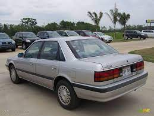
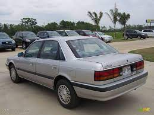
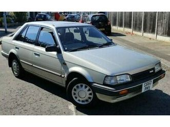
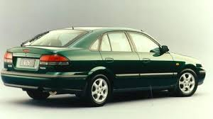
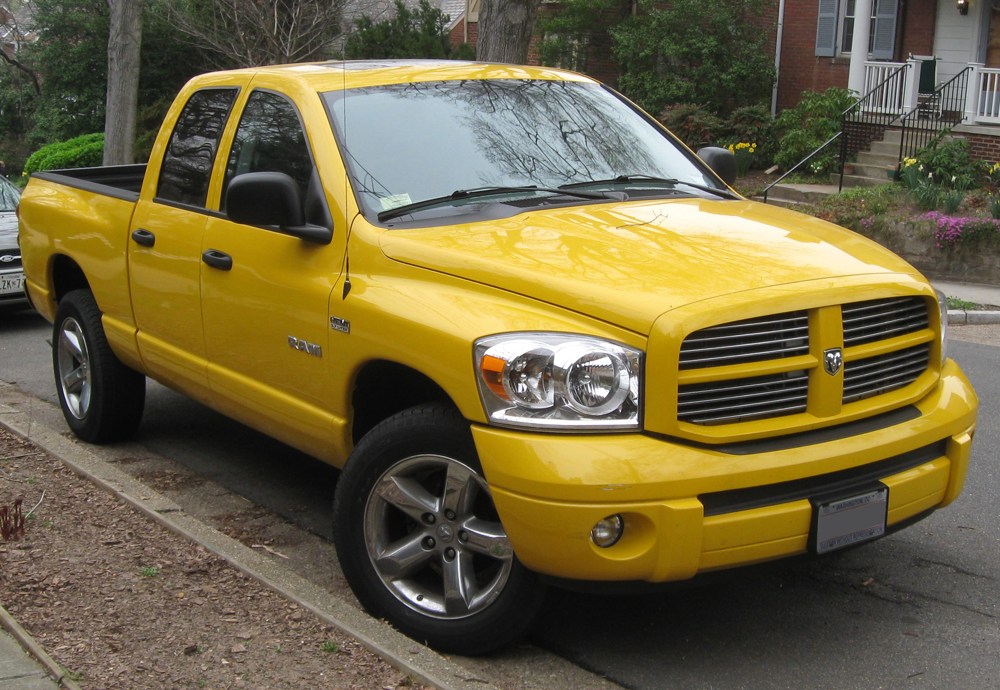
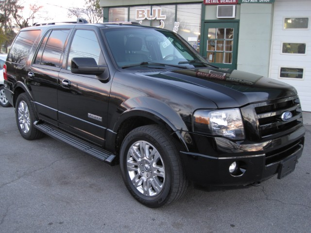
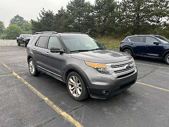
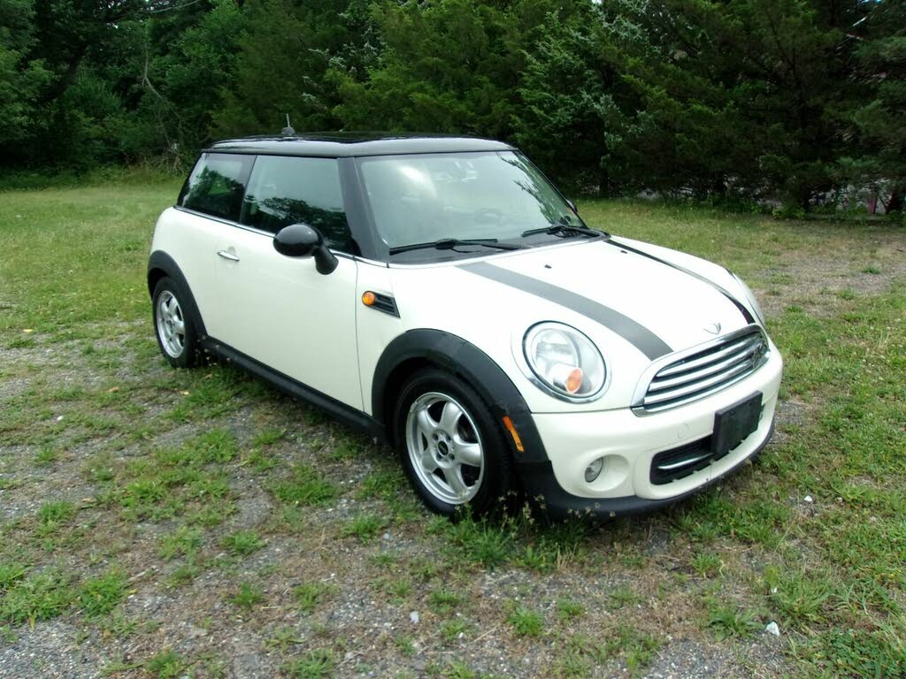

1990 Mazda 626
My very first car. I learned how to drive on this and it was a manual. It will always have a special place in my heart.

My very first car. I learned how to drive on this and it was a manual. It will always have a special place in my heart.
My second car. Towards the end of it's life it dropped a cylinder, but I still drove it for another year on 3 cylinders.
My love of my first car brought me around to buying another 626. This time it was an automatic but I still enjoyed driving it.
This was my dedicated work vehicle and having second row seats still allowed me to take kids with me while the family was still small.
My multipurpose work vehicle. Still allows me to manage construction projects and with 8 seats it will transport the whole family.
My wife's car, but occassionally I'll drive it. She really loves it.
My putting around car. Fun to drive, and a little more reasonable than driving a huge vehicle around by yourself.
If a baby number 7 is in the picture, then we won't fit in the Expedition and we will have to find something bigger. My wife loves the Transit vans, but I guess we'll see.